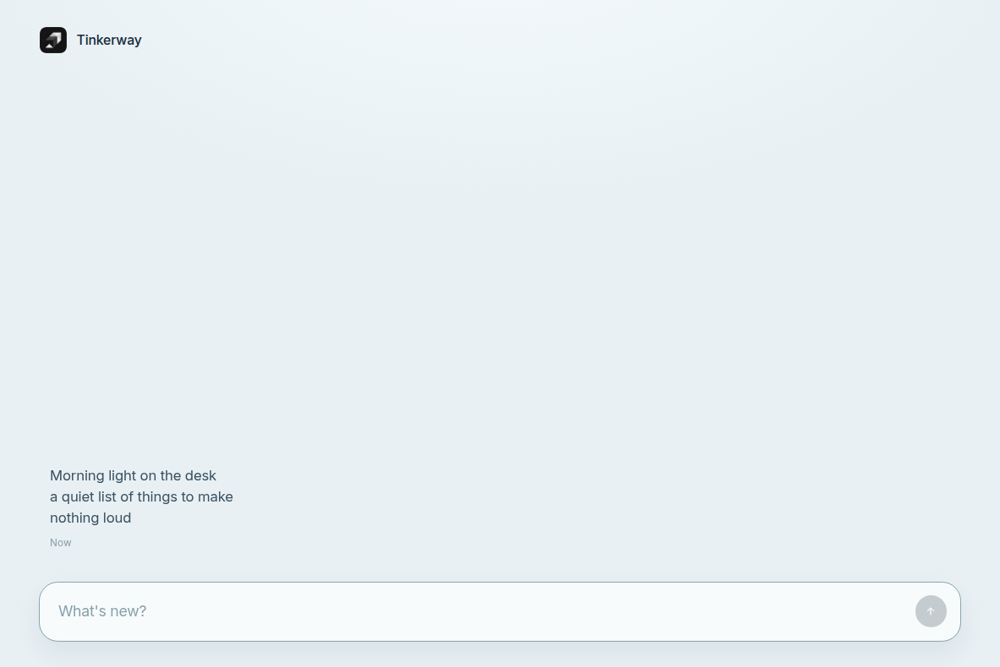

tinkerway
build something. anything. whatever you want.
A home base for a maker. Capture thoughts first. Organization later.
Demo v1 is a messaging-style private capture window. Type at the bottom. Send puts the thought in the feed above. Tap a row to read the full text.
Words stay on your machine. Tauri shell, Rust vault, encrypted local .tw files, key in the OS keychain. Nothing leaves the device for this demo.
